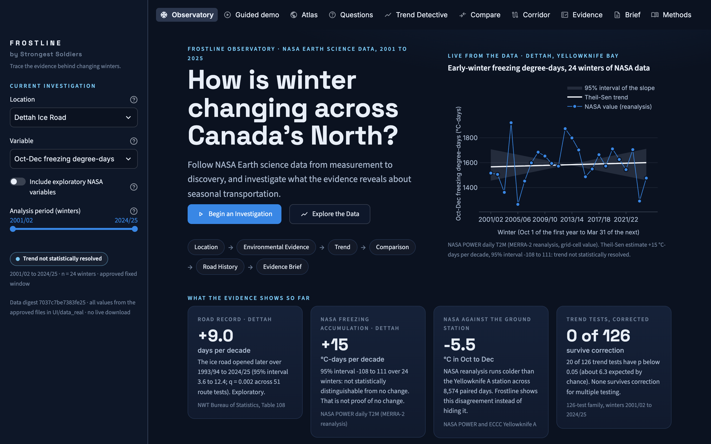
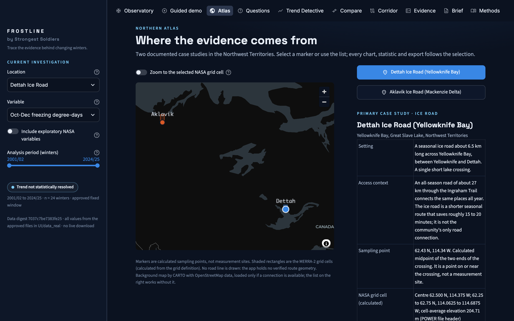
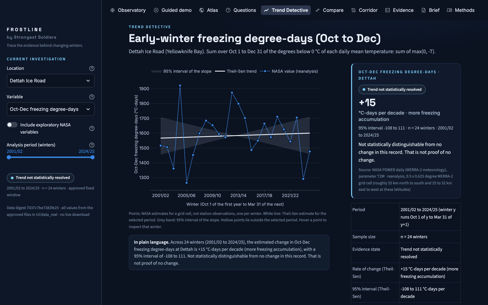
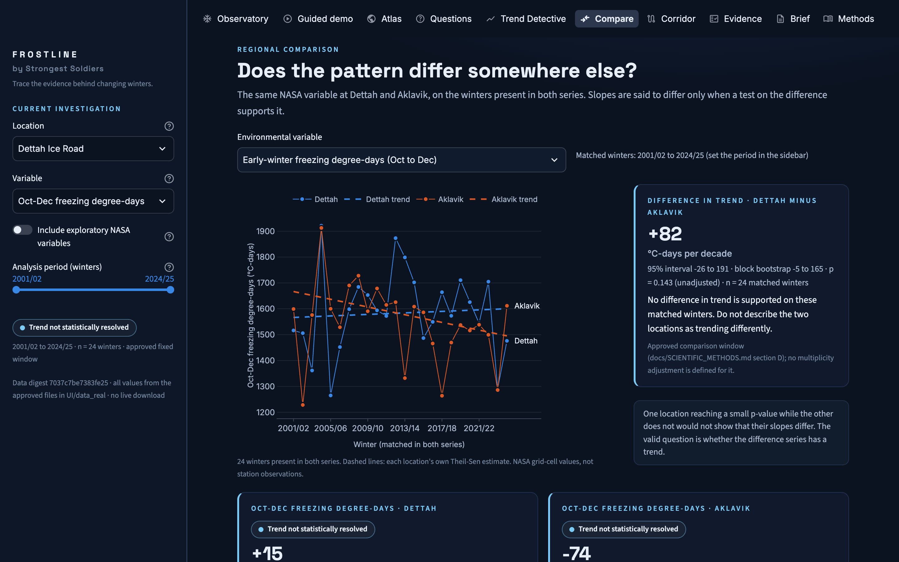
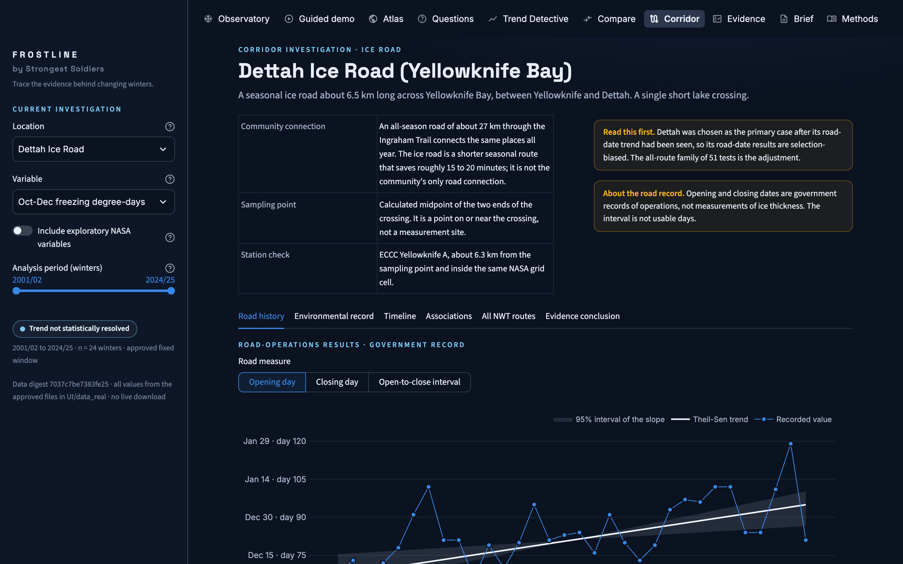
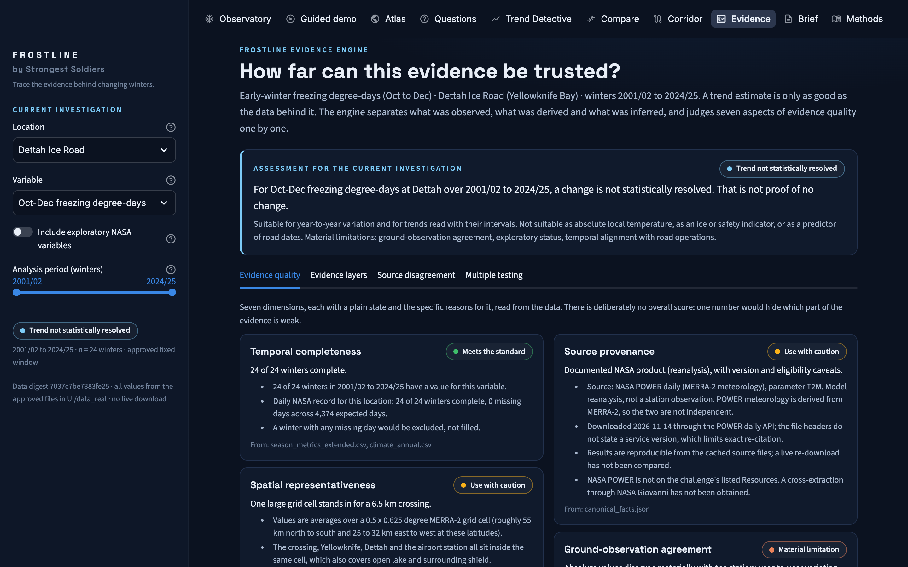
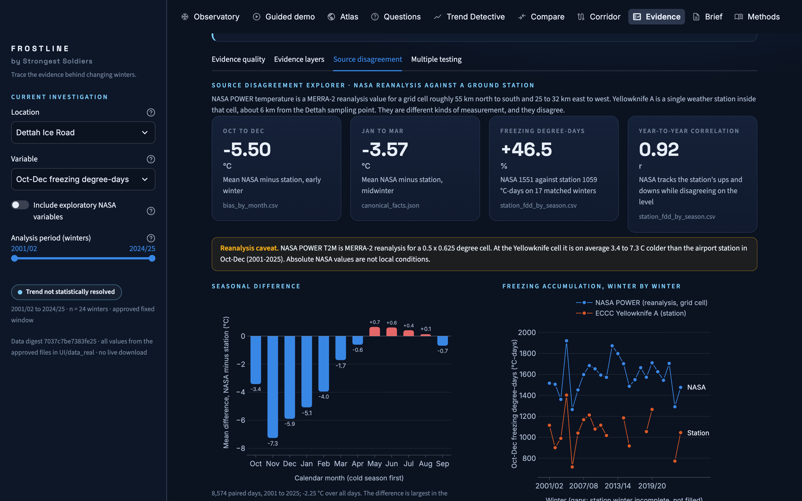

Trace the evidence behind changing winters.
An interactive investigation platform that turns NASA Earth science data into a guided, reproducible study of how northern winter conditions are changing, and of what the evidence does and does not show about seasonal roads.
Strongest Soldiers · Halifax

Seasonal roads on frozen lakes and rivers connect northern communities and carry supplies each winter.
Asking how winters and road seasons have changed means:
Frostline compresses that workflow into one guided investigation.



Dettah ice road opening, 1993/94 to 2024/25 (95% interval 3.6 to 12.4, n = 32; q = 0.002 across 51 route-level tests). Exploratory.
NASA freezing accumulation at Dettah, 24 winters (95% interval -108 to 111). Not statistically distinguishable from no change. That is not proof of no change.
20 of 126 trend tests have p below 0.05; none survives correction for multiple testing.

Seven aspects of evidence quality, judged one by one with reasons read from the data. No overall score.
NASA reanalysis against the Yellowknife A station. Frostline shows the disagreement instead of hiding it, and applies no correction.

Try it: [live application link to be added after deployment]
